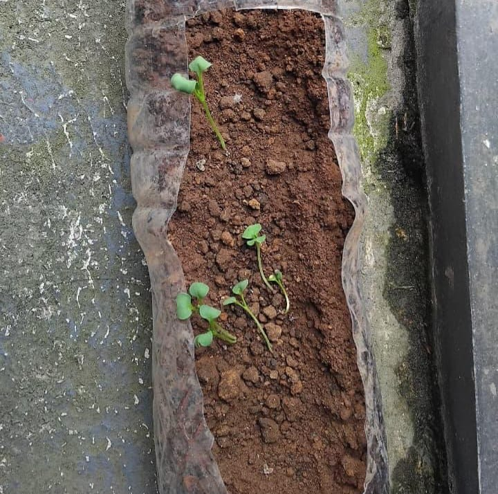
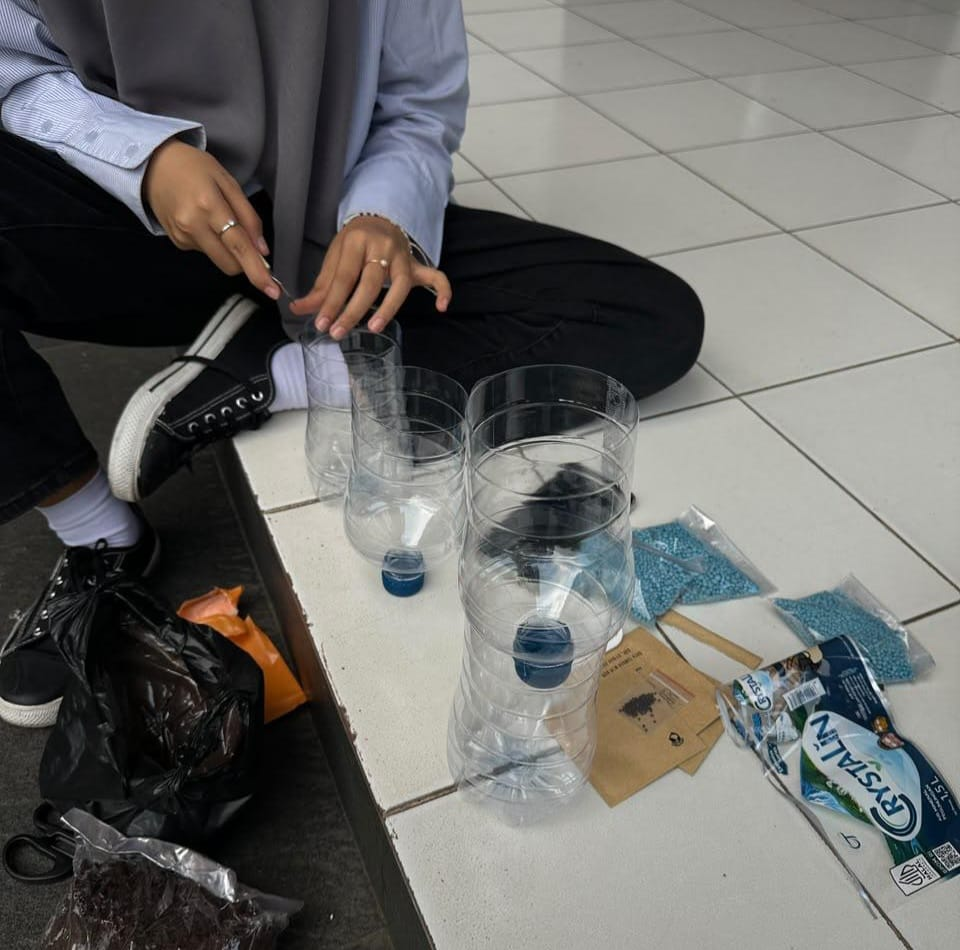
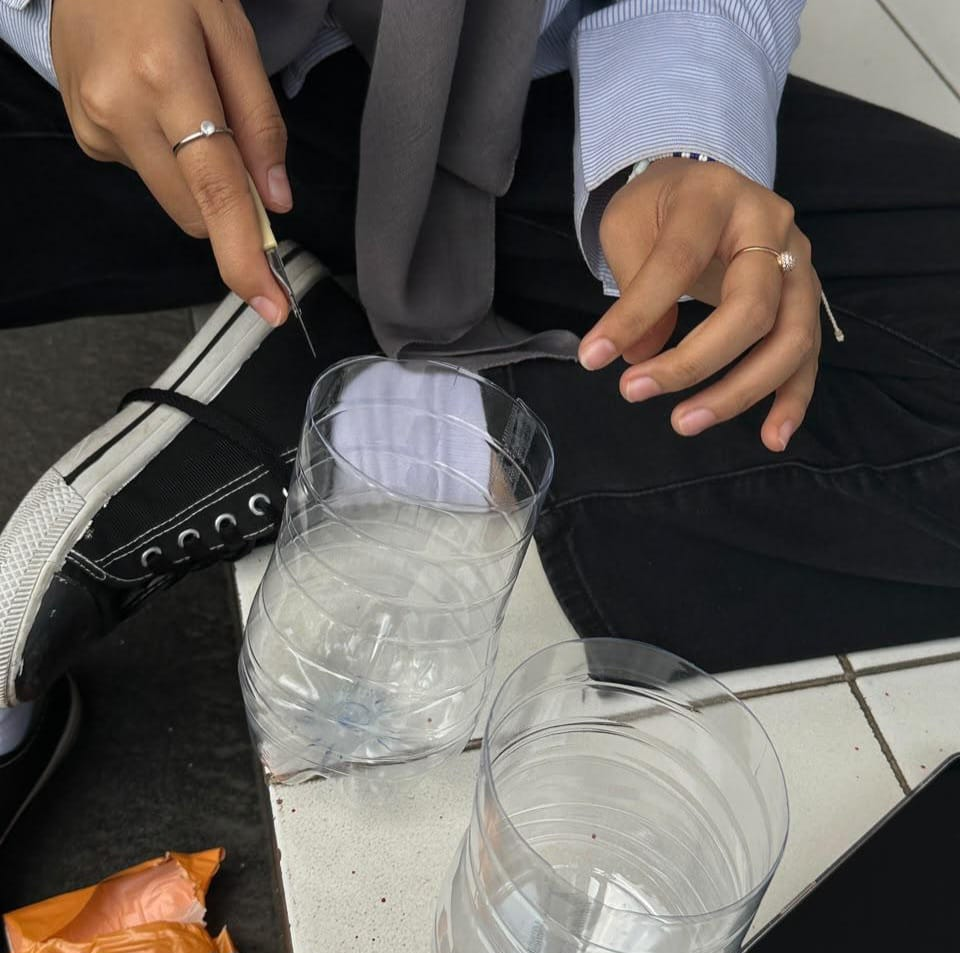

Pengamalan Sila 2 & Sila 3 Melalui Daur Ulang Botol Plastik
Wujud nyata kepedulian kemanusiaan terhadap lingkungan (Sila 2) dan semangat gotong royong kebersamaan (Sila 3) dalam pembuatan pot tanaman dari limbah botol bekas.
Penerapan Sila 2 & Sila 3 Pancasila
Analisis mendalam keterkaitan pembuatan pot daur ulang dengan Sila Ke-2 dan Sila Ke-3



Sila Ke-2: Kemanusiaan yang Adil dan Beradab
Bentuk Pengamalan Utama: Menumbuhkan empati dan rasa kepedulian terhadap sesama manusia dengan menjaga lingkungan tetap bersih, rapi, dan sehat.
- Menciptakan lingkungan hidup yang bebas dari penumpukan limbah mikroplastik.
- Menghargai hak setiap orang untuk menghirup udara bersih dan menikmati keasrian lingkungan.
- Mewujudkan perilaku beradab dengan tidak membuang sampah sembarangan.
Sila Ke-3: Persatuan Indonesia
Bentuk Pengamalan Utama: Bekerja sama dan bergotong-royong dalam mengumpulkan sampah botol bekas serta menghijaukan lingkungan sekolah secara bersama-sama.
- Menggalang semangat gotong royong antar siswa dalam aksi kelestarian lingkungan.
- Menghilangkan perbedaan dan menyatukan tujuan demi lingkungan yang lebih asri.
- Menjaga kebersamaan kelompok dalam membagi tugas pembuatan pot secara adil.
Panduan Langkah Pembuatan Pot (DIY)
Setiap alur pembuatan pot mengandung nilai pengamalan Sila 2 dan Sila 3
Pengumpulan Botol & Pembersihan
Kumpulkan botol plastik bekas 1.5 Liter di lingkungan sekitar. Bersihkan botol dari sisa minuman dan stiker bekas agar siap diolah menjadi pot yang higienis.
Poin Penting Langkah Ini:
Kritik & Saran Pengunjung
Punya masukan untuk proyek kami? Silakan tulis di bawah. (Inbox pesan hanya bisa dibuka oleh anggota kelompok menggunakan PIN).
Tulis Kritik / Saran Anda
Masukan Anda sangat berarti untuk pengembangan proyek ini.
Inbox Khusus Kelompok
Masukkan PIN kelompok untuk membaca daftar kritik & saran masuk.